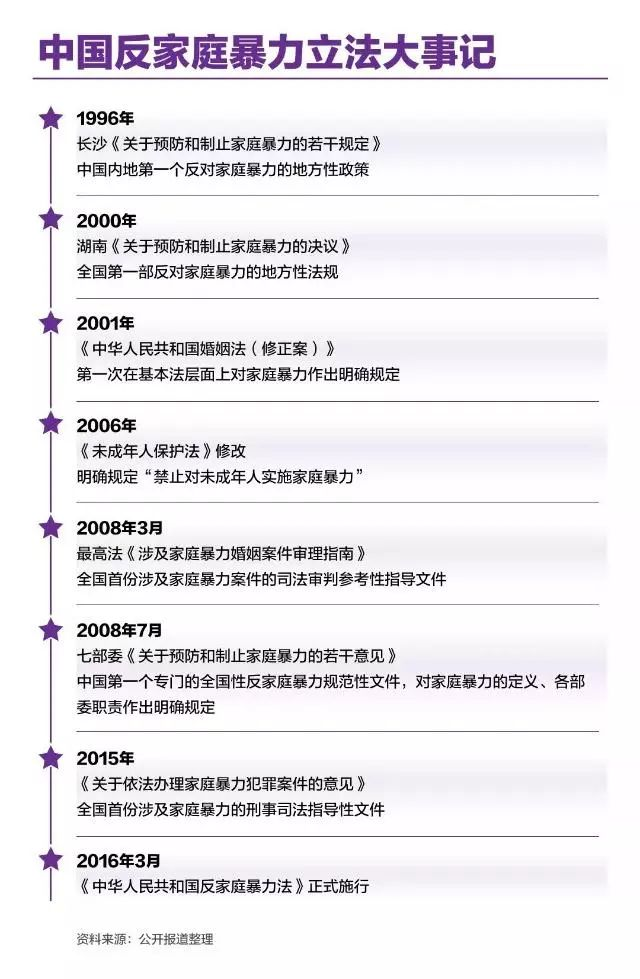
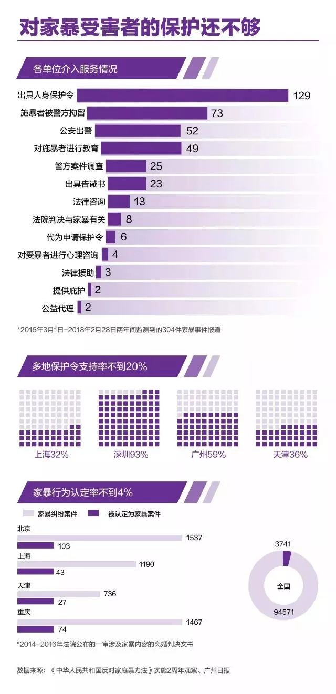
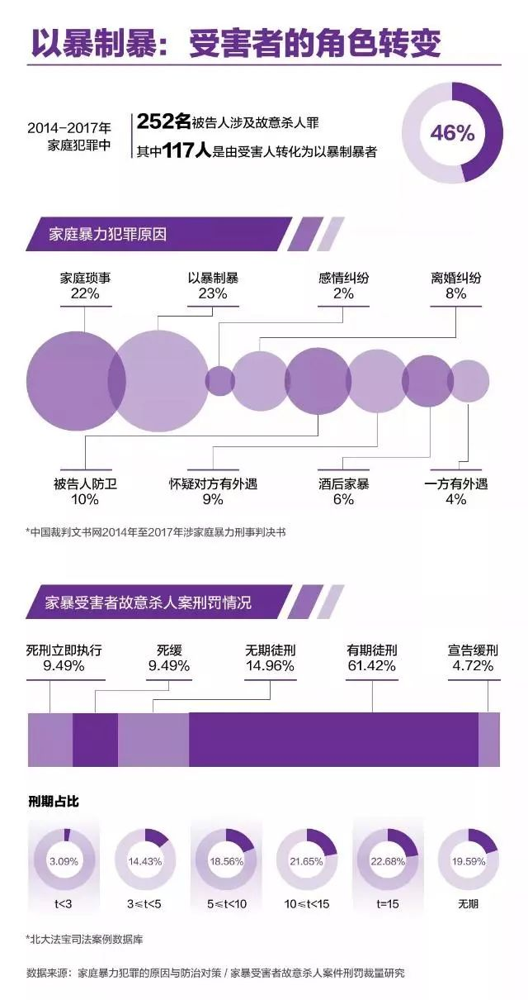

图说 | 年轻的反家暴法
11 月 25 日，消除对妇女的暴力国际日，比三八妇女节的名气小得多。“女性”与“家暴”这两个词，意外地在中国瞬息万变的舆论场赢得了一席之地，虽然旋即让位给了更宏大的主题。
事实上，女性所遭受的暴力，不只在名人的花边新闻里。据联合国统计，全世界三分之一的女性都遭受过身体或性暴力，大部分的施暴者是她们的亲密伴侣。在中国，4.3 亿个家庭的门后，每 7.4 秒就有一位女性遭丈夫殴打。
从左至右分别是：
妮可·基德曼在《大小谎言》中饰演的塞莱斯特，
安吉拉·贝塞特在《与爱何干》中饰演的蒂娜，
法拉·福塞特在电影《The Burning Bed》中饰演的法拉.
反家暴法尚年幼
事实上，很多人反家暴的第一课，并非来自官方宣传。得益于冯远征老师入木三分的表演，家暴者形象代言人安嘉和，成了很多 90 后的童年阴影。电视剧《不要和陌生人说话》，也让不到三分之二的没有类似遭遇的幸运儿们，对家暴行为产生了一种最直观的厌恶。
▲ 《不要和陌生人说话》剧照
作为中国第一部反映家庭暴力题材的电视连续剧，《不要和陌生人说话》在 2001 年播出，距国务院发布《中国妇女发展纲要》(1995-2000年)，第一次明确使用“家庭暴力”这一概念不过六年。
▲ Bad Guy 三连发
时钟再往回拨三年，北京红枫妇女心理咨询服务中心开通当时全国第一条妇女热线。此后为反家暴法奔走 26 年的孙晓梅教授，就是在该中心的委派下，奔赴在调研第一线，完成了民间机构对家庭暴力比较早期的个案研究。
正是在这些民间妇女组织和维权者所付出的努力下，2015 年底，《中华人民共和国反家庭暴力法》审议表决通过。此前，全国妇联已连续 6 次在全国“两会”期间，通过代表委员或以全国妇联名义提出“关于将反家庭暴力法列入全国人大常委会立法计划的建议”。
2016 年 3 月 1 日，包含 6 章 38 条的反家暴法正式施行。这距离联合国发表《关于废除对女性暴力的宣言》，已有二十余年。

而反家暴法，还有很长的路要走。
从《反家暴法》第二条的规定可以看出，我国将家庭暴力的行为方式分为身体暴力和精神暴力。而在有关国际公约、国外立法例以及学界理论中，性暴力和经济控制也被纳入了家暴的范畴。
一项关于中国家暴状况的调查显示，性暴力在家庭暴力中占 13.9% ，由于羞于启齿和极强的私密性，性暴力的认定十分困难，但这严重侵犯了女性的性自主权和人格尊严权。
立法之后又怎样
《疯狂英语》李阳的妻子 Kim Lee 曾撰文称，一位女警在她报案后对她说，“你和你丈夫都是好人，冷静一点，回家去吧，一切都会好的。”
这一切，都发生在反暴力法实施之前。但是，在它实施后的这 900 多天里，对家暴受害者的保护仍未臻完善。
据全国妇联权益部有关负责人介绍，全国 2000 余家家暴庇护场所，在 2016 年一年时间里，仅提供了 149 人次庇护服务。北京为平妇女权益机构发布的报告中，提到了一位受家暴妇女 2017 年冬亲历的北京庇护服务，“工作人员的态度令她一再受到惊吓，抵达过程、住宿和餐食环境无不加重她的担心和恐惧”。

在法院审理中，家暴的认定同样困难重重。2014 年到 2016 年，全国涉及家暴的一审案件数量共 94571 件，其中 3741 件被认定存在家暴行为，认定率仅为 3.96% 。很多家暴事件，因“证据不足”不了了之。
就算法院认定家暴了，幼童直接抚养权判给家暴实施方的判例仍屡见不鲜，尽管最高法已经出台了指导性意见。《琅琊榜》武术指导刘杰家暴离婚案，2016 年 4 月法院一审判决，认定男方实施了家庭暴力，却把幼子的直接抚养权判决给男方；二审(终审)判决中，仍认为将孩子的直接抚养权判给施暴方，对孩子的身心健康成长没有不利影响。对母亲 3 年来探视权无法实现一事，法庭让已经无法沟通的双方自行解决。
作为最受关注的反家暴措施，保护令制度实施中也面临不少挑战。很多地方保护令申请的支持率不到 20% ，而经做工作的撤回率高达三分之一。常驻人口超 2400 万的上海，在反家暴法实施一周年之际，审结的 140 份保护令申请中，核发 45 份，驳回 45 份，50 份经解释后申请人撤回。“法院通过积极开展法制教育和司法调解工作，一些施害人主动承诺保证不再实施家庭暴力，37 件案件的受害人自愿撤回申请。”相关报道如是称。
▲女子遭丈夫家暴法院被判不予离婚 法官：宁拆十座庙不拆一桩婚。新京报我们视频出品
当夏娃杀死亚当
条条大路不通罗马，有些绝望的家暴受害者，最后举起了凶器，转变为施暴者。
“现在如果还能让你再选择一次的话，你还会这么做吗?”
“是想说实话吗?要是在这种情况下，没有第二个选择。”
我们在昨天探讨了“杀夫”是缺乏法律保护和社会认可的妇女走投无路时的反抗。由家庭暴力延伸出的故意杀人罪，将近一半为“以暴制暴”式的反弹。

在我国当前“保留死刑、严格控制和慎重适用”的死刑政策下，死刑只适用于罪行极其严重的犯罪分子。而在一项研究统计的 127 个家暴受害者故意杀人案中，判处死刑(包括死刑缓期二年执行)的案例约占案例总数的五分之一。所适用的刑期段，也集中分布于十年以上有期徒刑和无期徒刑。
2015 年，《关于依法办理家庭暴力犯罪案件的意见》发布，明确了对因家庭暴力引发的伤害、杀害施暴者的刑事案件，要充分考量其中的过错责任以及防卫因素。但是，这并不具备强制性。
但情况终究在慢慢改善。
在反家暴法实施之后，越来越多受暴者勇敢发声，越来越多公权力机构在努力做出积极回应。据《工人日报》报道，11月 22 日，北京二中院在新闻发布会上称，反家暴法实施至今，以判决方式审结涉家暴民事纠纷二审案 52 件，认定诉讼主张成立的各类案件总体比例呈上涨趋势。
感谢新京报官微对本文的支持，本文转载已获许可。阅读原文请点击原文链接。